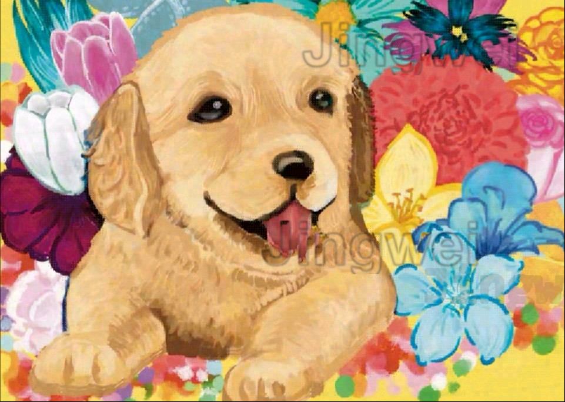
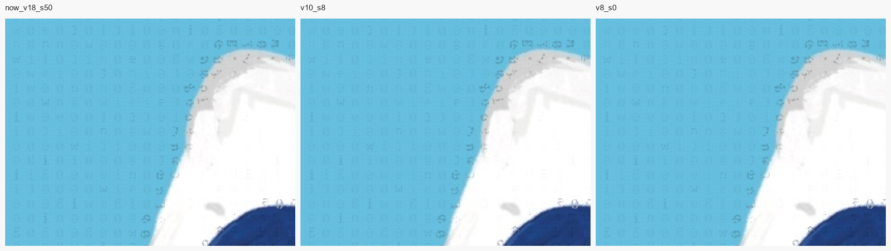
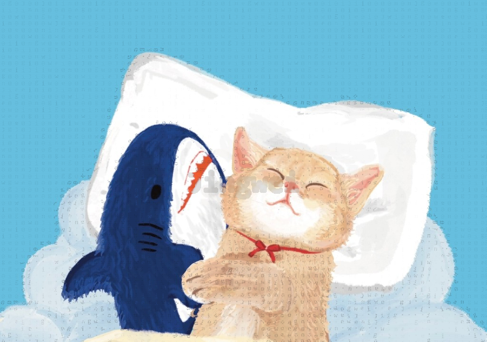

署名·快速 · 样张对照
请对照后回复要用哪一档。建议：纹理图走狗图位移；平涂走最右「可见度 8 / 署名 0」。
1. 狗图 · 位移（纹理图建议走这一路）

整词位移，字号短边 15%，位移 10px，带阴影。
2. 猫图 · 三档浅字放大（蓝底最容易看出深浅）

左：现在配方（可见度 18 + 署名 50）。中：10 / 8。右：8 / 0（建议）。
3. 猫图全图
现在：18 / 署名 50

候选：10 / 署名 8
建议：8 / 署名 0